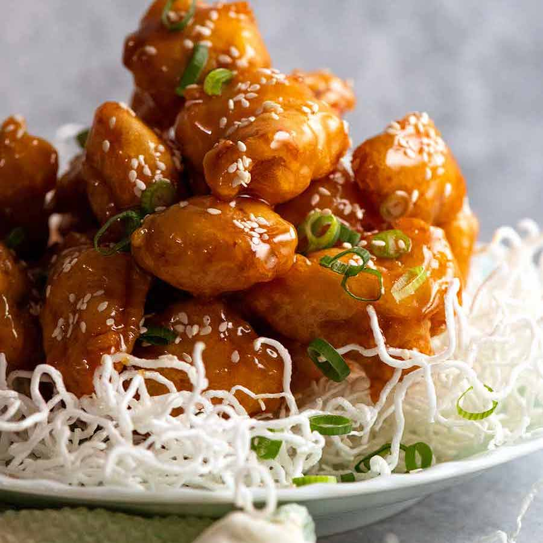

Honey Chicken Recipe

Description
This is a Honey Chicken that’s built to last! This recipe brings together a plethora of Asian cooking secrets for a
Honey Chicken that stays crispy for hours, even after tossing in the honey sauce. The Chinese Fry batter yields a
crispy, puffy coating that’s light and not greasy, and requires no special ingredients or equipment!
Ingredients
- COLD soda water or club soda or seltzer water – NOT sparkling mineral water which is naturally carbonated (ie fizzy). We want something that has man made bubbles in it which is fizzier. The fizz helps with the puff, the cold is key for ultra crispy: the shock of the cold batter hitting the hot oil = super crispy virtually immediately;
- MORE cornflour/cornstarch than flour – flour has gluten which causes crispy batters to soften. Cornflour is gluten-free, so using this in the batter is key for crispiness. (A use rice flour in a similar way in my Crispy Beer Battered Fish.) Why not just use all cornflour? Because it becomes like a thick glue that’s not workable as a batter, and also because cornflour stays white when fried. We want a nice golden colour for Honey Chicken;
- Flour – we need some to to activate the baking powder to make this crispy coating puffy (baking powder doesn’t work on cornflour) and also so the chicken pieces fry up nice and golden (as above – cornflour doesn’t go golden when fried, it’s stays white); and
- Baking powder – key ingredient to give the batter some lift so it’s puffy, rather than a thin coating that’s fully adhered to the chicken like in Sweet & Sour Pork.
- Chicken thighs are best here, because they’re juicier than breast and tenderloin which means you have more room for error with the fry time – handy for people who aren’t highly experienced with deep frying. But if you do want to use chicken breast, see recipe notes for extra tenderising tip using baking soda (Velveting Chicken);
- Soy sauce – light soy sauce is best, to keep the honey sauce as clear as possible. All purpose will work fine too but will make the sauce a wee bit darker. Do not use dark soy sauce – way too strong;
- Chinese cooking wine – essential ingredient to make food taste truly like Chinese restaurants (they use it by the gallon, it’s in literally every Chinese recipe). Sub with soy sauce; and
- Cornflour/cornstarch – this acts as a tenderiser as well as slightly thickening the marinade so when dusted with cornflour before frying, it makes it stick.
- NO water – most Honey Chicken sauces include water and cornflour/cornstarch for thickening. Crispy Coating and water are not friends! Give the water a miss;
- Glucose or corn syrup – this makes the honey coating almost “candy” like, something you might’ve observed at Chinese restaurants. This is key for a Honey Chicken that stays as crispy as possible – just like the secret to Caramel Popcorn that stays crispy for weeks (no exaggeration!).
Steps
- Marinate chicken – to add seasoning into the pieces and also to tenderise so each piece is ultra tender inside. This also gives us room for error in the frying time which is essential for ordinary folk who aren’t experienced fryers!
- Cornflour/cornstarch coating – provides an extra layer to seal in the juiciness of the chicken so it doesn’t soften the crispy coating. Method utilised in Sweet and Sour Pork;
- COLD batter – key step for ensuring ultra crispy is COLD batter because the shock of the cold batter hitting hot oil = crispier chicken. The batter is made cold by making it just prior to frying, and using fridge cold soda water / club soda. For extra insurance, you can also chill the bowl and dry ingredients before mixing in the water – good tip for beginners;
- Dip in batter – drop in a handful of chicken pieces, then coat in batter. Ready to fry!
- Fry 1 (3 minutes)- 3 minutes at 180C/350F until LIGHT golden. It will be unusually pale because of the cornflour in the batter (which doesn’t brown) but a touch is all it takes to know it’s SUPER crispy!! This step is to cook the chicken through. The chicken is already very crispy, but it won’t stay crispy for more than 10 to 15 minutes once coated in sauce with a single fry – hence the double fry in Step 7!
- COOL before double fry – another key tip to make crispiness-that-lasts! I do not know the science behind this, all I know is that double-frying cold chicken is crispier AND stays crispy for longer. Possibly the same reason why cold batter = crispier chicken?
- Double fry (90 sec) – fast becoming the worst kept Asian secret, a quick double fry is THE secret to ultra crispy less greasy fried food (more examples: Sweet and Sour Pork, my mother’s Chicken Karaage). It also solves the batch-cooking cooling issue (ie first cooked goes cold) because you can crowd the pot for Fry #2 so all the chicken is reheated in one or at most, two quick batches.
- Drain on rack – we’ve gone to all this effort for crispy chicken, now is not the time to drain on paper towels, making the underside sweaty and soft! 😂 Elevate the chicken with a rack to drain it and ensure it stays crispy.